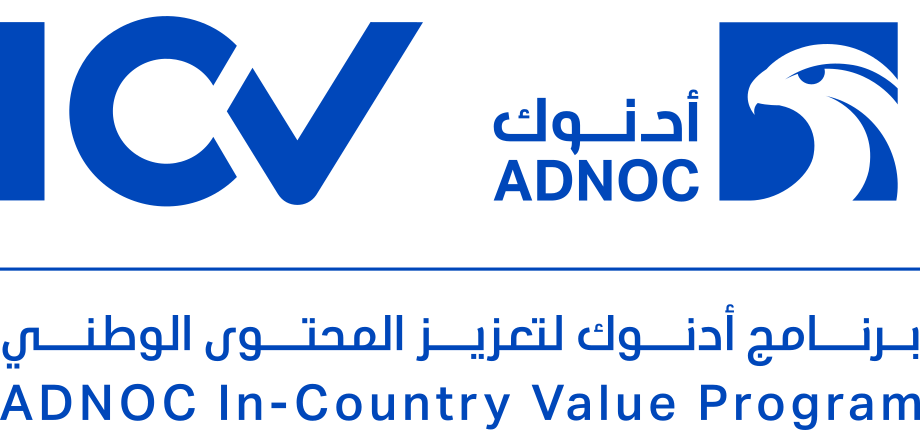

Certified, and audited independently

ICV certified and a registered ADNOC supplier.
These are three calmer ways to show the certificates near the bottom of the home page. Each one uses the real certificates and the official ICV logo. Point at the items to see the hover effects; clicking still opens the PDF.
The section's heading stays the same in every option. Only the content under it changes. The Certifications page itself keeps its large certificate previews.
The three certificates sit in one overlapping stack on the left and fan out when you point at them. On the right, three clean rows, one per standard, each opening its PDF, with the ICV logo underneath. The paper becomes a single image, not three separate scans.

ICV certified and a registered ADNOC supplier.
Four clean rows: the three ISO standards and ADNOC ICV. Only one picture shows at a time, on the right, and it changes as you point at each row: a certificate, or the ICV logo on white. It works like the "Our managed services" list higher up the home page, so the page feels consistent.
The calmest option: one band split by fine lines, with 9001, 45001 and 14001 as large numbers and the ICV logo in the last column. Nothing shows the paper until you point at a number. Then its certificate rises above it, and a click opens the PDF. If you pick this, I'd remove the similar band at section 03 higher up the home page, so it isn't shown twice.